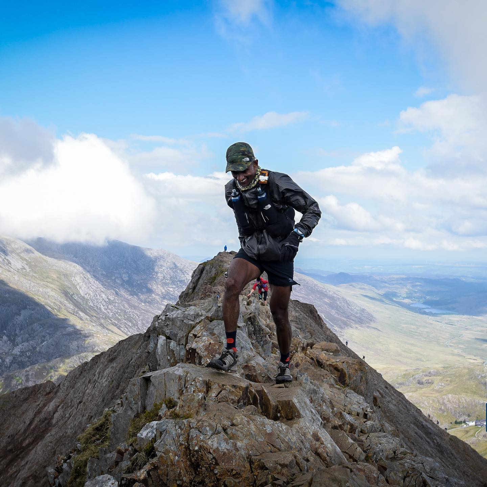
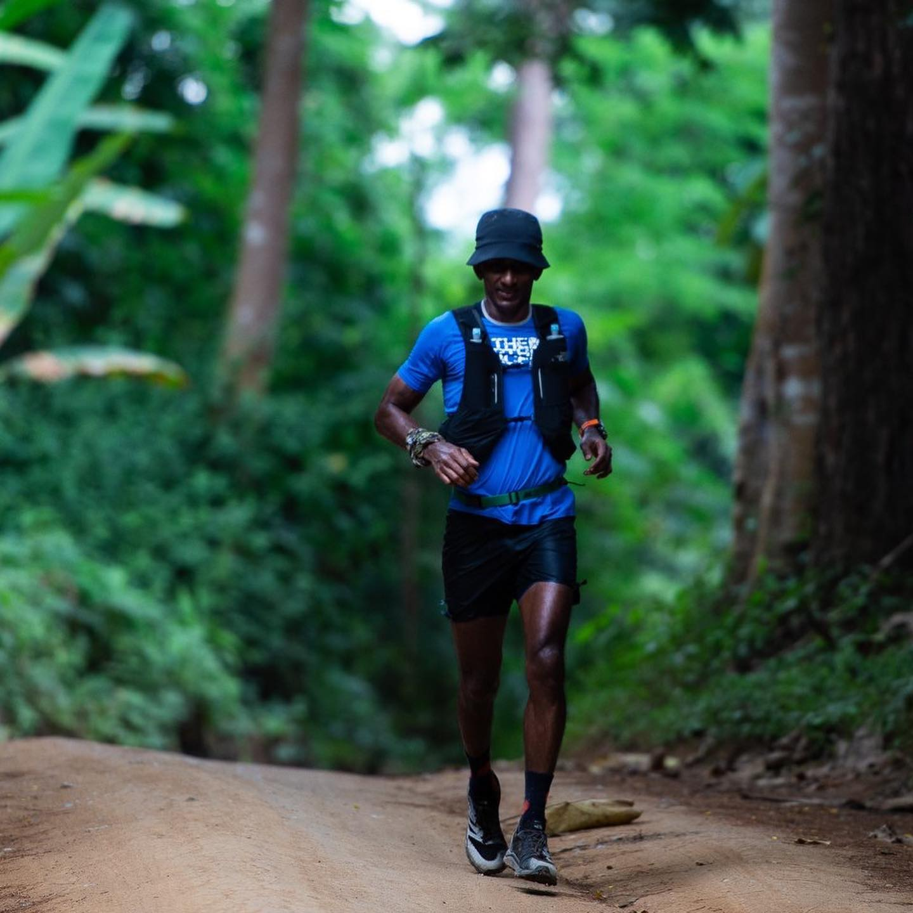
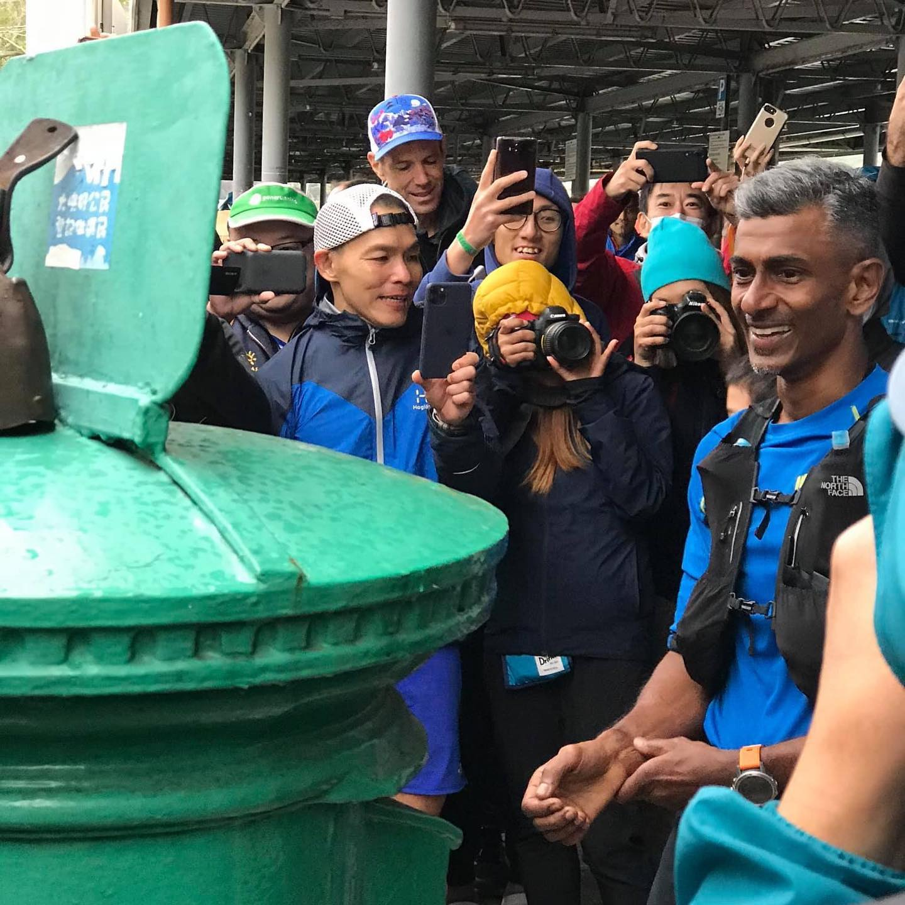
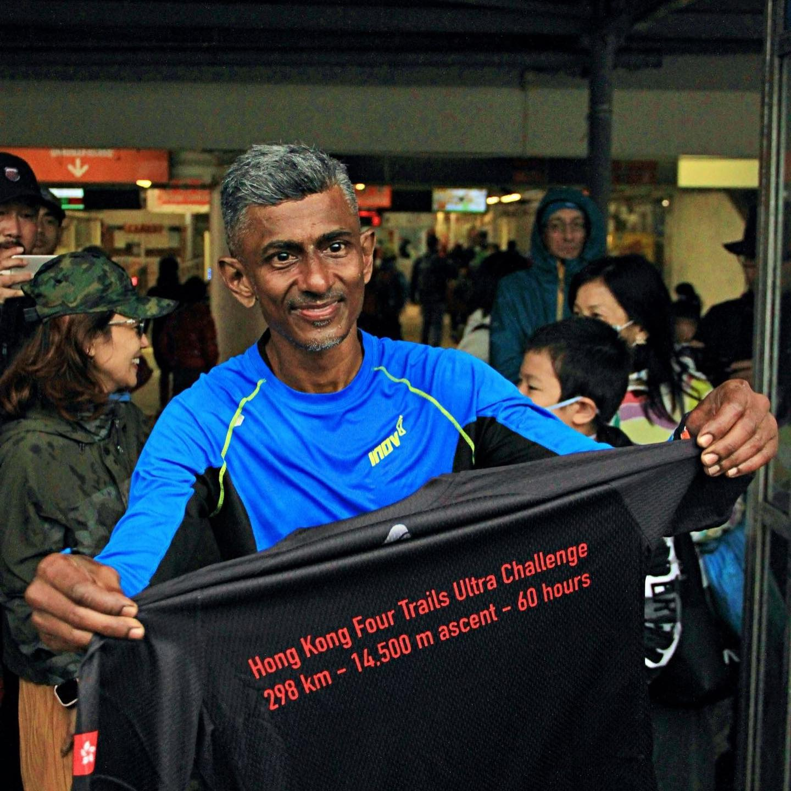

Hey folks! Meet a fantastic ultra runner from Singapore Abimanyu Shunmugam @abi_ultra_runner ! One of the toughest endurance athletes who has so many races under his belt and conquered the most challenging Ultras of the world: HK 4 Trails Ultra Challenge 2020 (298 km in 56:06 hr) and Dragon Back Race (315 km, 15,500 m of ascend)! Over this weekend Abimanyu is taking over our page and will share his nutrition tips and tricks that help him be so incredibly strong and successful! ___ #ultrarunning #abimanyushunmugam #trailrunning #hk4tuc #dragonbackrace #dragonbacktrail #endurance #athletetakeover #sportnutrition #runnersofinstagram #irunthisbody #marathon #marathontraining #swimbikerun #sgrunners #runningmotivation #runners #ultra
2020-08-29 10:37:35
Back to main page